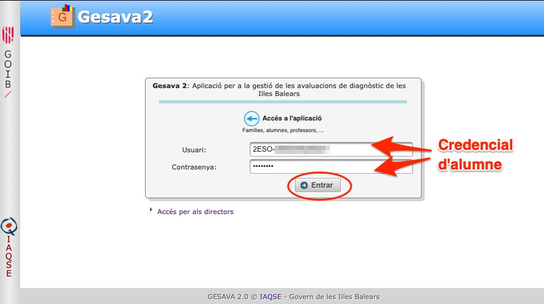
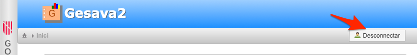
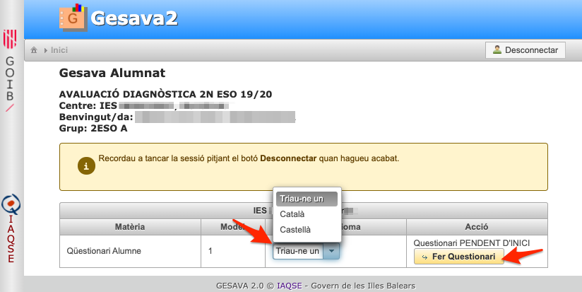
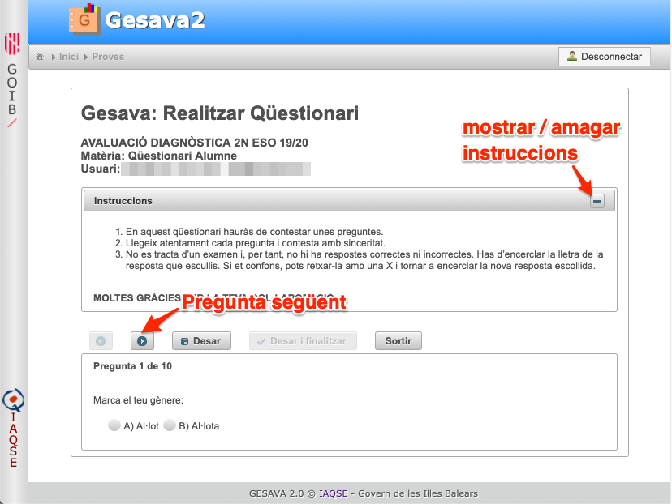
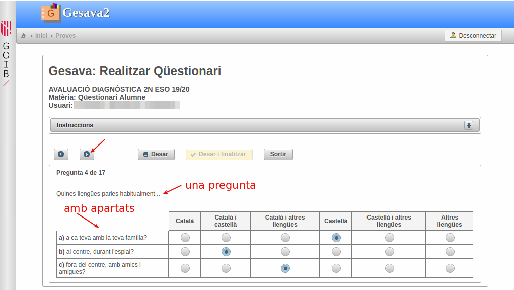
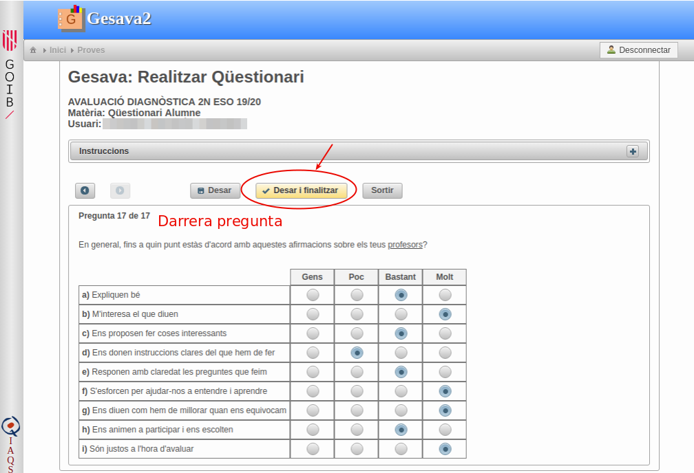
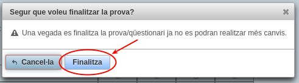
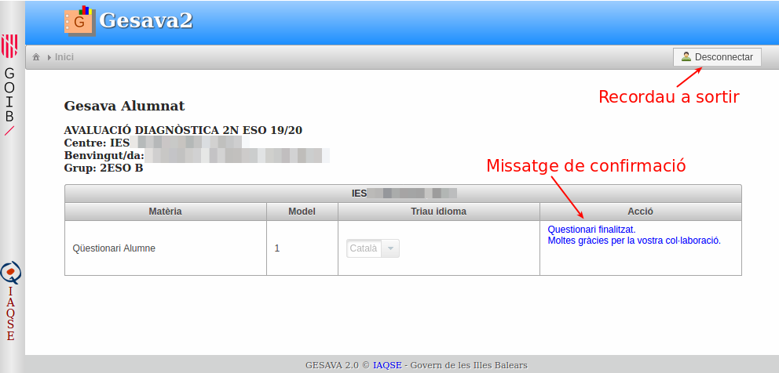
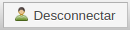

Gesava2 Alumnat
Gesava2 - Alumnat
Índex de continguts
1. Accés a l'aplicació
Per accedir a l'aplicació seguiu les següents passes:
-
Cliqueu sobre la imatge "Accés GESAVA"
 de la part superior dreta d'aquesta pantalla.
de la part superior dreta d'aquesta pantalla. Us apareixerà la pàgina d'accés a l'aplicació en la qual heu d'introduir l'usuari i contrasenya que us ha proporcionat el vostre centre. Per exemple, si cursau 2n d'ESO, el vostre usuari comença amb les lletres 2ESO-. Aneu en compte d'escriure exactament els camps, respectant majúscules minúscules i sense deixar espais en blanc.
Molt Important! Recordeu a tancar la sessió pitjant sobre el botó "Desconnecta" quan hagueu acabat.

2. Realitzar el qüestionari
Per realitzar el qüestionari d'alumne heu de:
-
Triar l'idioma en què voleu fer el qüestionari (català / castellà) del menú desplegable.
 Clicar sobre el botó "Fer qüestionari"
A la següent pantalla s'obrirà la primera pregunta del qüestionari. A la part superior trobareu les instruccions que podreu amagar/desplegar mitjançant el botó /
- Responeu a la pregunta i pitjeu el botó per passar a la pregunta següent.
Fixeu-vos que hi ha preguntes que contenen diferents apartats. En tal cas, heu de contestar cadascun d'ells.
Quan hagueu contestat la darrera pregunta és important que pitgeu "Desar i Finalitzar"
-
Us apareixerà un diàleg de confirmació. Cliqueu sobre el botó "Finalitza" i tot seguit tornareu a la pàgina inicial on podreu llegir el missatge "Qüestionari Finalitzat. Moltes gràcies".
 - Si ja heu acabat, recordeu a pitjar sobre el botó 